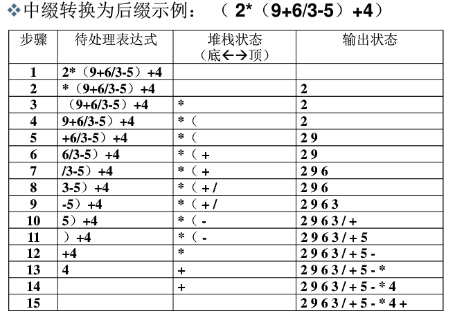

原文出处:本文由博客园博主yu__xuan提供。
原文连接:https://www.cnblogs.com/poi-bolg-poi/p/10792430.html
原文连接:https://www.cnblogs.com/poi-bolg-poi/p/10792430.html
先声明负数,小数处理会出错！
需要使用栈的知识，直接用数组去模拟比较容易看懂所以我就来模拟一下了。
先来了解一下原理：
1、运算数：直接输出
2、左括号：压入堆栈
3、右括号：将栈顶的运算符弹出并输出，直到遇到左括号。
4、运算符：
- 若优先级大于栈顶运算符，则把它压栈。
- 若优先级小于等于栈顶运算符，将栈顶运算符弹出并输出，再比较新的栈顶运算符，直到该运算符大于栈顶运算符优先级为止，然后将该运算符压栈。
5、各对象处理完毕，则把堆栈中存留的运算符一并输出。
示例（来源）：

代码：
#include<iostream> #include<cstdio> #include<cstring> #include<string> #include<algorithm> #include<iomanip> #include<cmath> #include<queue> #include<stack> #include<map> #include<set> #include<vector> using namespace std; int top2=1; string s; char ysf[10001]; int cmp(char a,int b) { if(a=='+'||a=='-') { if(ysf[b-1]=='(') return 1;//优先级要高时 else return 0; } if(a=='*'||a=='/') { if(ysf[b-1]=='+'||ysf[b-1]=='-'||ysf[b-1]=='(') return 1;//优先级要高时 else return 0; } } int main() { cin>>s;//输入中缀表达式 int n=s.length();//计算长度 ysf[0]='(';//先在栈底加一个左括号。 for(int i=0;i<n;++i) { if(s[i]>='0'&&s[i]<='9')//当为数字时。 { int js=0; int ans=0,bz=1; int sum1=i,sum2=0; while(s[sum1]>='0'&&s[sum1]<='9') { js++; sum2++; sum1++; }//要将整个数字算全。 sum1--; while(sum1>=i) { ans+=bz*(s[sum1]-'0'); bz*=10; sum2--; sum1--; } cout<<ans<<"."; i+=js-1;//将i指向数字的最后一位，因为for循环又加了一。 /*可以改为这样的。 int x=0; while(s[i]>='0'&&s[i]<='9') { x=x*10+(s[i++]-'0'); } cout<<x<<"."; i--;i指向数字的最后一位，因为for循环又加了一。*/ } else//处理运算符 { if(s[i]=='(')//左括号直接入栈。 { ysf[top2]='('; top2++; continue; } if(s[i]==')')//右括号输出它到左括号之间的运算符，不用入栈。 { while(ysf[top2-1]!='(') { cout<<ysf[top2-1]; top2--; } top2--;//将此变量（指针）直接指向了左括号当读到下一个运算符时直接覆盖掉。 continue;//防止进行下面的程序将右括号输出，所以直接进行下一次循环。 } if(cmp(s[i],top2)==1)//如果优先级要大于现在栈顶元素，就直接入栈。 { ysf[top2]=s[i]; top2++; } else//不然的话（优先级要小于等于时），输出优先级大于等于的运算符，直至优先级大于现在的栈顶元素，入栈。 { while(cmp(s[i],top2)==0) { cout<<ysf[top2-1]; top2--; if(cmp(s[i],top2)) { ysf[top2]=s[i]; top2++; break; } } } } } for(int i=top2;i>=0;--i) { if(ysf[i]!='('&&ysf[i]!=')') cout<<ysf[i]; }//输出最后剩余的运算符，要从后往前。 return 0; }
input：2*(9+6/3-5)+4
output：2.9.6.3./+5.-*4.+
大佬改后可以判断负数的：


#include<iostream> #include<cstdio> #include<cstring> #include<string> #include<algorithm> #include<iomanip> #include<cmath> #include<queue> #include<stack> #include<map> #include<set> #include<vector> using namespace std; int top=1; string s; char ysf[10001]; int cmp(char a) { if(a=='+'||a=='-') { if(ysf[top-1]=='(') return 1; //优先级要高时 else return 0; } if(a=='*'||a=='/') { if(ysf[top-1]=='+'||ysf[top-1]=='-'||ysf[top-1]=='(') return 1;//优先级要高时 else return 0; } } int main() { cin>>s; //输入中缀表达式 int n=s.length(); //计算长度 ysf[0]='('; //先在栈底加一个左括号。 for(int i=0;i<n;++i) { if(s[i]=='-'&&s[i-1]!=')'&&(s[i-1]<'0'||s[i-1]>'9')) cout<<s[i++]; long long x=0,t=0; while(s[i]>='0'&&s[i]<='9') //数字直接输出 { t=1;x=x*10+(s[i++]-'0'); } if(t==1) { cout<<x<<" "; if(i>=n) i--; } if(s[i]<'0'||s[i]>'9') //处理运算符 { if(s[i]=='(') //左括号直接入栈。 { ysf[top]='('; top++; continue; } if(s[i]==')') //右括号输出它到左括号之间的运算符，不用入栈。 { while(ysf[top-1]!='(') cout<<ysf[--top]; top--; //将此变量（指针）直接指向了左括号当读到下一个运算符时直接覆盖掉。 continue; //防止进行下面的程序将右括号输出，所以直接进行下一次循环。 } if(cmp(s[i])==1) //如果优先级要大于现在栈顶元素，就直接入栈。 ysf[top++]=s[i]; else //不然的话（优先级要小于等于时），输出优先级大于等于的运算符，直至优先级大于现在的栈顶元素，入栈。 { while(cmp(s[i])==0) cout<<ysf[--top]; ysf[top++]=s[i]; } } } for(int i=top;i>=0;--i) //输出最后剩余的运算符，要从后往前。 { if(ysf[i]!='('&&ysf[i]!=')') cout<<ysf[i]; } return 0; }